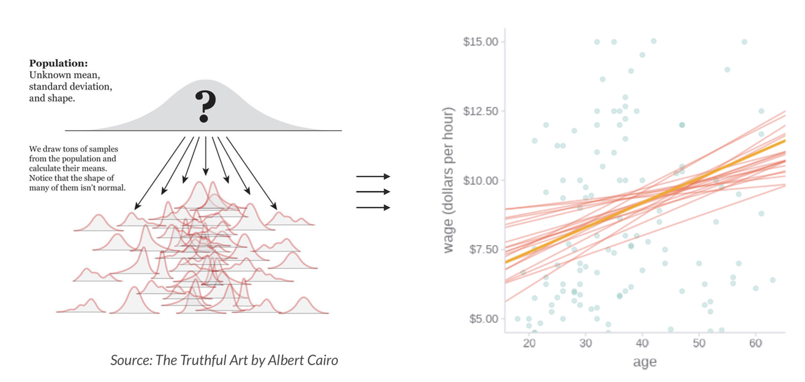
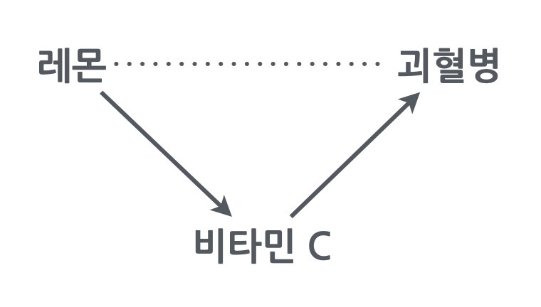
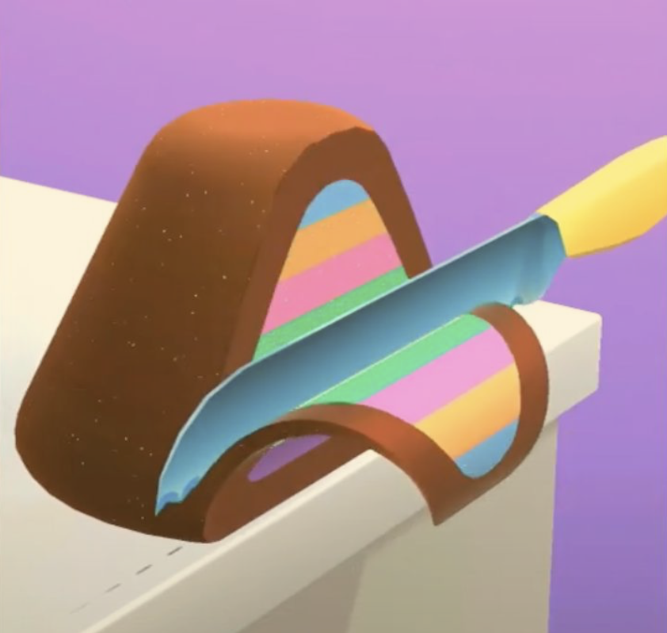
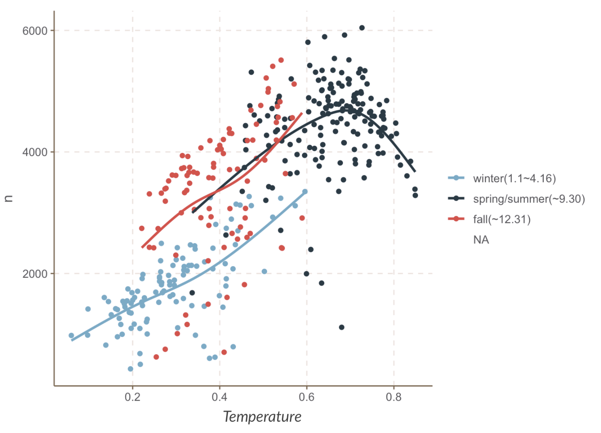
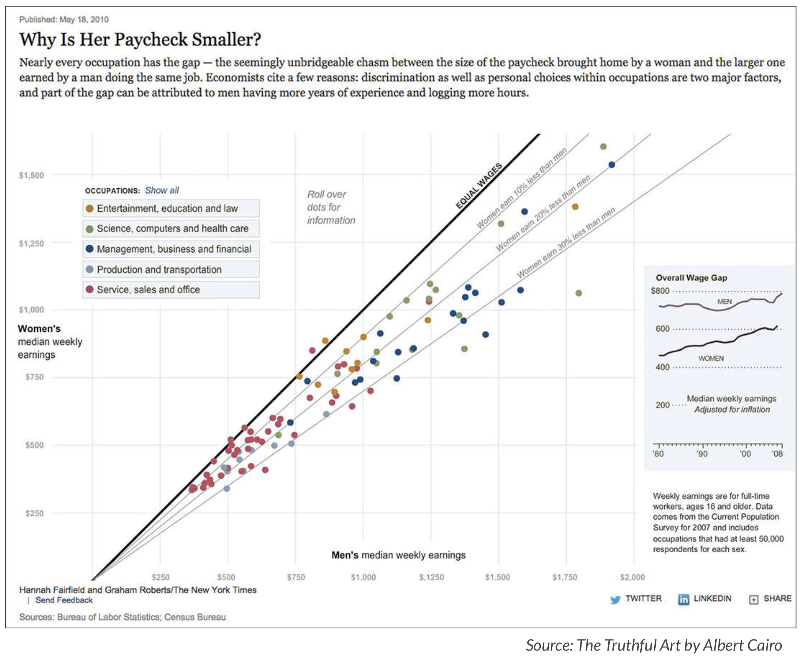

Statistical Rethinking
데이터를 분석한다는 것은?
예측 모델 vs. 관계/원인 분석
예측 모델
예측의 신속성과 정확성
Machine Learning 강점
Algorithmic
- 고양이인가 아닌가? 예측의 정확성
- 개인화된 추천 목록: 유튜브, 넷플릭스
- 시리의 답변
- 비즈니스 분석
관계/원인 분석
현상 본질과 매커니즘 파악
Statistical Models 강점 Parametric
- Q: 닭의 울음이 태양을 솟게 하는가?
- 돈과 행복: 패턴 vs. 예외

- 가난, 인종, 범죄
- 임금 차별

- 출산율의 감소
. . .
- 심리적 관성/편견 주의
- 분석가의 책임의식
- 두 가지는 서로 상보 관계!
데이터를 분석한다는 것은?
전통적인 분류
탐색적 분석 vs. 가설 검증
exploratory vs. confirmatory- 탐색적 분석
- 통찰 혹은 가설의 기초 제공
- 끼워 맞추기? 오류에 빠지기 쉬움
- 가설 검증
- 진위의 확률을 높임
- 탐색적 분석으로부터 온 가설은 재테스트
- 탐색적 분석
관찰 vs. 실험 데이터
observational vs. experimental- 당근과 시력?
- 커피의 효과?
- 남녀의 임금 차별?
기술적 vs. 추론적 분석
descriptive vs. inferential- 연봉과 삶의 만족도와 관계
- 두통약의 효능

통계적 사고 I
- 남녀 임금의 차이

Confounding
- 머리가 길면 우울증도 높다?
- 초등생이 발이 크면 독해력도 높다?

- Simpson’s paradox

Source: The book of why by Judea Pearl
통계적 사고 II
레몬과 괴혈병

남녀 연봉 차이의 원인?
- 직업 특성, 부서, 직급, 연령, 출산, 출세욕

- 직업 특성, 부서, 직급, 연령, 출산, 출세욕
수집된 데이터의 성격
Selection Bias
- 노인에 관한 데이터: 누가 사망했는가?
- 설문 데이터: 누가 참여했는가?
- 회사 내에서의 만족도 조사: 샘플 속성의 변화
- 코호트/특정세대의 특성: 그들의 특성인가?
데이터 시각화
Data Visualization
분석도구: 현미경, 연장도구
강점이자 약점

효과적/미적인 정보 전달 수단
효과적이고 임팩트있도록 infographics

Interactive